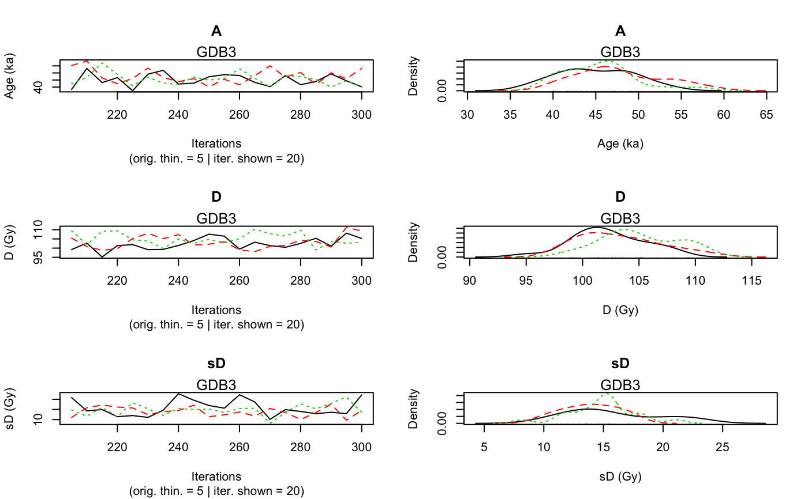

Age_Computation.RdThis function computes the age (in ka) of a sample according to the model developed in Combes and Philippe (2017),
based on an output of Generate_DataFile or Generate_DataFile_MG.
A sample, for which data is avalilable in several BIN files, can be analysed.
Age_Computation(DATA, SampleName, PriorAge = c(0.01, 100), BinPerSample = c(1), SavePdf = FALSE, OutputFileName = c("MCMCplot"), OutputFilePath = c(""), SaveEstimates = FALSE, OutputTableName = c("DATA"), OutputTablePath = c(""), LIN_fit = TRUE, Origin_fit = FALSE, distribution = c("cauchy"), I = 1, Iter = 50000, t = 5, n.chains = 3, quiet = FALSE)
| DATA | list of objects:
|
|---|---|
| SampleName | character: name of the sample. |
| PriorAge | numeric (with default): lower and upper bounds for the sample age parameter (in ka).
Note that, |
| BinPerSample | integer (with default): vector with the number of BIN files per sample.
If in |
| SavePdf | logical (with default): if TRUE save graph in pdf file named |
| OutputFileName | character (with default): name of the pdf file that will be generated by the function if |
| OutputFilePath | character (with default): path to the pdf file that will be generated by the function if |
| SaveEstimates | logical (with default): if TRUE save Bayes estimates and credible interval at level 68% and 95% and
the result of the gelman en Rubin test of convergency, in a csv table named |
| OutputTableName | character (with default): name of the table that will be generated by the function if |
| OutputTablePath | character (with default): path to the table that will be generated by the function if |
| LIN_fit | logical (with default): if |
| Origin_fit | logical (with default): if |
| distribution | character (with default): type of distribution that defines
how individual equivalent dose values are distributed around the palaeodose.
Allowed inputs are |
| I | integer (with default): if |
| Iter | integer (with default): number of iterations for the MCMC computation (for more information see jags.model). |
| t | integer (with default): 1 every |
| n.chains | integer (with default): number of independent chains for the model (for more information see jags.model). |
| quiet | logical (with default): enables/disables rjags messages |
NUMERICAL OUTPUT
A list containing the following objects:
Sampling that corresponds to a sample of the posterior distributions of the age (in ka), palaeodose (in Gy) and equivalent dose dispersion (in Gy) parameters.
Model_GrowthCurve, stating which dose response fitting option was chosen;
Distribution, stating which distribution was chosen to model the dispersion of individual equivalent dose values around the palaeodose of the sample;
PriorAge, stating the priors used for the age parameter (in ka).
The Gelman and Rubin test of convergency: prints the result of the Gelman and Rubin test of convergency for the age, palaeodose and equivalent dose dispersion parameters.
A result close to one is expected.
In addition, the user must visually assess the convergency of the trajectories by looking at the graph
generated by the function (see PLOT OUTPUT for more informations).
If both convergencies (Gelman and Rubin test and plot checking) are satisfactory,
the user can consider the printed estimates as valid. Otherwise, the user may try increasing the number of MCMC interations
(Iter), or being more precise on the PriorAge parameter (for example specify if it is a young sample c(0.01,10) an old sample c(10,100)),
or changing the parameter distribution or the growth curve, to reach convergency.to reach convergency.
Credible intervals and Bayes estimates: prints the Bayes esitmates, the credible intervals at 95% and 68% for the age, palaeodose and equivalent dose dispersion parameters of the sample.
PLOT OUTPUT
A graph with the MCMC trajectories and posterior distributions of the age, palaeodose and equivalent dose dispersion parameters is displayed.
The first line of the figure correponds to the age parameter, the second to the palaeodose parameter and the third to the equivalent dose dispersion parameter.
On each line, the plot on the left represents the MCMC trajectories, and the one on the right the posterior distribution of the parameter.
To give the results in a publication, we recommend to give the Bayes estimate of the parameter as well as the credible interval at 95% or 68%.
Option on growth curves
As for AgeS_Computation and Palaeodose_Computation, the user can choose from 4 dose response curves:
Saturating exponential plus linear growth (AgeMultiBF_EXPLIN):
for all x in IR+, \(f(x)=a(1-exp(-x/b))+cx+d\); select
LIN_fit=TRUE
Origin_fit=FALSE
Saturating exponential growth (AgeMultiBF_EXP):
for all x in IR+, \(f(x)=a(1-exp(-x/b))+d\); select
LIN_fit = FALSE
Origin_fit = FALSE
Saturating exponential plus linear growth and fitting through the origin (AgeMultiBF_EXPLINZO):
for all x in IR+, \(f(x)=a(1-exp(-x/b))+cx\); select
LIN_fit=TRUE
Origin_fit=TRUE
Saturating exponential growth and fitting through the origin (AgeMultiBF_EXPZO):
for all x in IR+, \(f(x)=a(1-exp(-x/b))\); select
LIN_fit=FALSE
Origin_fit=TRUE
Option on equivalent dose distribution around the palaeodose
The use can choose between :
cauchy: a Cauchy distribution with location parameter equal to the palaeodose of the sample
gaussian: a Gaussian distribution with mean equal to the palaeodose of the sample
lognormal_A: a log-normal distribution with mean or Average equal to the palaeodose of the sample
lognormal_M: a log-normal distribution with Median equal to the palaeodose of the sample
Please note that the initial values for all MCMC are currently all the same for all chains since we rely on the automatic initial value generation of JAGS. This is not optimal and will be changed in future. However, it does not affect the quality of the age estimates if the chains have converged.
Combes, Benoit and Philippe, Anne, 2017. Bayesian analysis of multiplicative Gaussian error for multiple ages estimation in optically stimulated luminescence dating. Quaternary Geochronology (39, 24-34)
Combes, B., Philippe, A., Lanos, P., Mercier, N., Tribolo, C., Guerin, G., Guibert, P., Lahaye, C., 2015. A Bayesian central equivalent dose model for optically stimulated luminescence dating. Quaternary Geochronology 28, 62-70. doi:10.1016/j.quageo.2015.04.001
## load data file generated by the function Generate_DataFile data(DATA1,envir = environment()) priorage <- c(10,60) # GDB3 is an old sample Age <- Age_Computation( DATA = DATA1, SampleName = "GDB3", PriorAge = priorage, Iter = 100, quiet = TRUE)#> Warning: [plot_MCMC()] 'n.iter' out of range, reset to number of observations#> #> #> >> Sample name << #> ---------------------------------------------- #> GDB3 #> #> >> Results of the Gelman and Rubin criterion of convergence << #> ---------------------------------------------- #> Point estimate Uppers confidence interval #> A 1.06 1.24 #> D 1.1 1.36 #> sD 1.08 1.28 #> #> #> --------------------------------------------------------------------------------------------------- #> *** WARNING: The following information are only valid if the MCMC chains have converged *** #> --------------------------------------------------------------------------------------------------- #> #> parameter Bayes estimate Credible interval #> ---------------------------------------------- #> A 46.133 #> lower bound upper bound #> at level 95% 37.47 51.83 #> at level 68% 42.17 49.32 #> ---------------------------------------------- #> D 103.538 #> lower bound upper bound #> at level 95% 99.17 108.12 #> at level 68% 99.17 103.23 #> ---------------------------------------------- #> sD 14.842 #> lower bound upper bound #> at level 95% 11.09 22.75 #> at level 68% 10.13 15.63